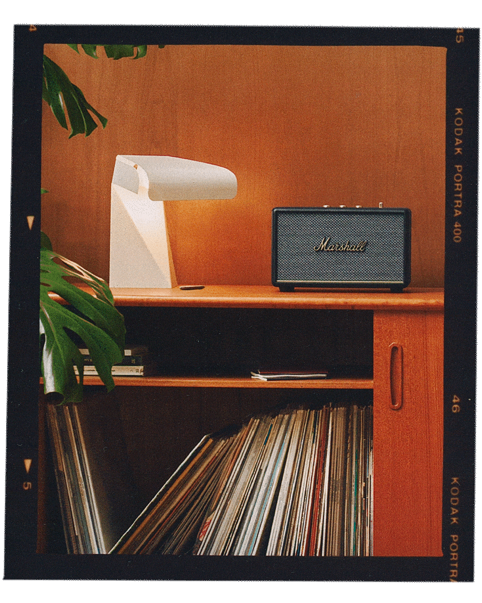
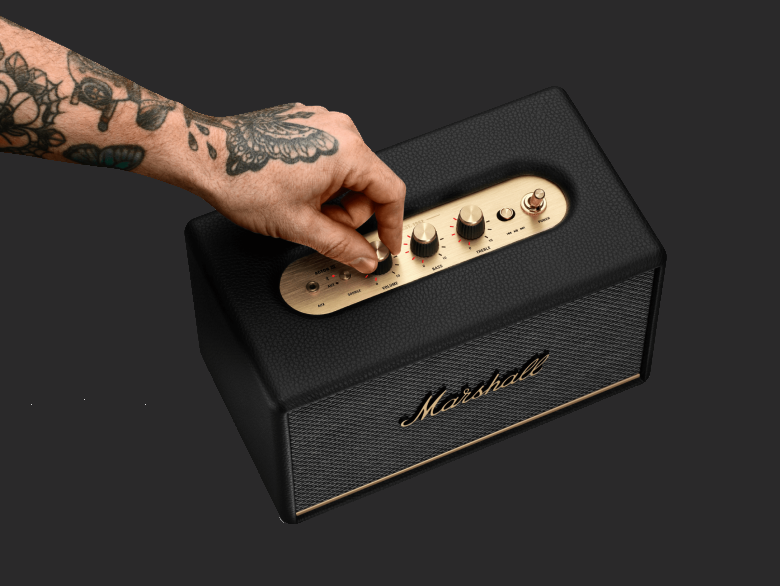
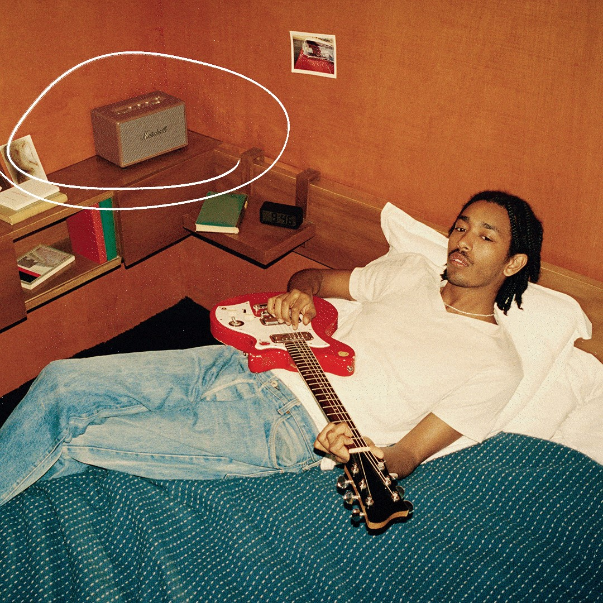
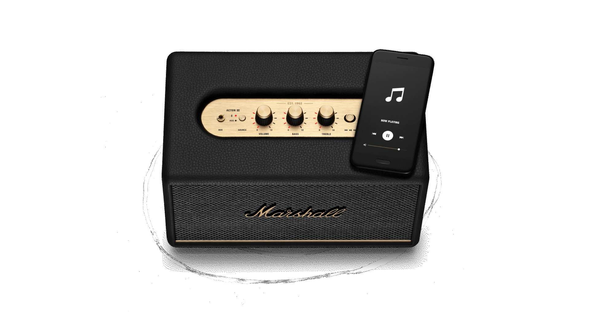

RE-ENGINEERED WIDER STEREO SOUNDSTAGE
This generation in the home lineup features an even wider acoustic footprint than before, with Marshall's characteristic surround sound that has been redesigned to give you a more immersive experience. Generation III speakers carry outward-angled treble and updated waveguides to deliver solid sound that's so wide it reaches anywhere in the room.
PAIR, PLAY AND TURN IT UP
These speakers are straight to business, so you can just pair and play without the hassle of a complex set-up. You’ll find everything you need right there on the unit, including the Bluetooth pairing button, power switch, bass and treble controls and the control knob so you can easily control your music without ever picking up your device.


ICONIC DESIGN THAT STANDS APART
Marshall has taken its signature rock ’n’ roll home speaker line-up and given it a stripped-back look that makes a loud statement. This iconic design knocks all other speakers off the shelf. Signature details such as the Marshall script and brass control knobs adorn each speaker, echoing the legacy of rock ’n’ roll.
CONNECT AND CONTROL
With next-generation Bluetooth 5.2 and the 3.5 mm input, connecting to your speaker and listening to your music has never been so effortless. Download and connect to the Marshall Bluetooth app to access advanced settings and Over-the-Air (OTA) updates. While you can control the bass and treble on top of each speaker, you’ll also find additional controls in the app. Just connect to your speaker directly from your device and start listening.

A MORE SUSTAINABLE APPROACH
The home line-up has music at heart and the environment in mind. While staying true to the iconic design that speaks to the brand’s heritage, this generation takes a more sustainable approach with a PVC-free build made from 70% recycled plastic and only vegan materials. Durable and solid, comprising high-quality materials and components, you can trust that your speaker will last.

MULTI-DIRECTIONAL CONTROL KNOB
The main difference is the size of the speakers and, as a result, the driver and amp configurations that affect the sonic quality and audio experience. Therefore, each speaker is suitable for different-sized rooms and varying loudness. Most of the connectivity and controls are the same across the Home Line III models, except for Acton and Woburn. Acton doesn't have RCA input, and Woburn is the only model equipped with an HDMI connector, making it more convenient to use with a TV.
Frequency range
45–20,000 Hz
Adjustable bass and treble controls
Fine-tune your music using the analogue
Stereo/mono
Stereo
Maximum sound pressure level
95 dB @ 1 m
Cabinet principle
Bass-reflex
POWER AMPLIFIERS
One 30 Watt Class D amplifier for the woofer
Wireless connectivity
Bluetooth 5.2, Ready for Bluetooth LE Audio
Wired connectivity
3.5 mm Input
Bluetooth range
10 m / 30 ft
Customise sound
Yes, on speaker and in app
WI-FI
No